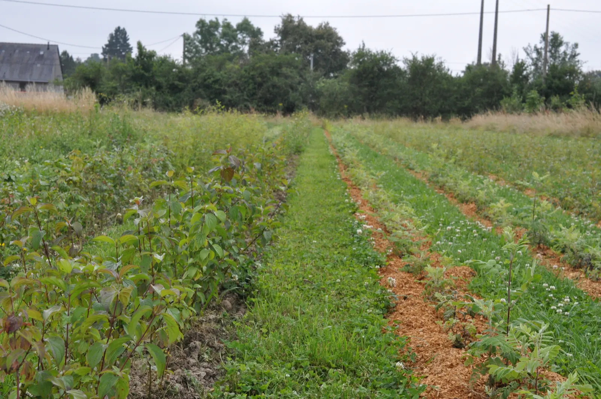
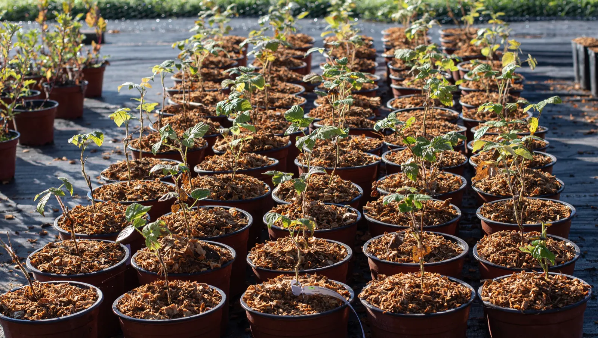
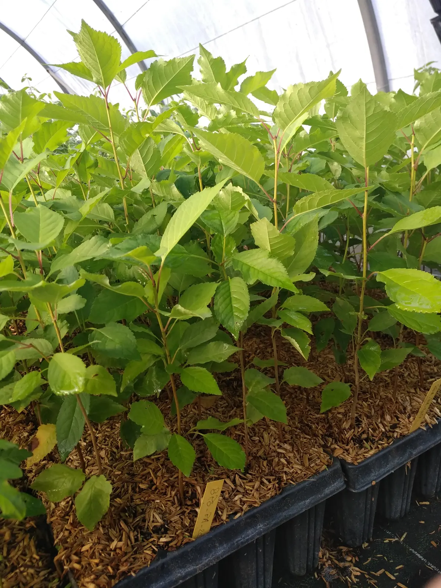
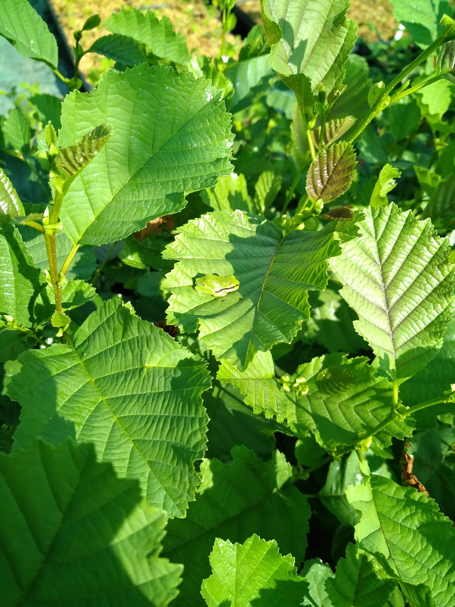
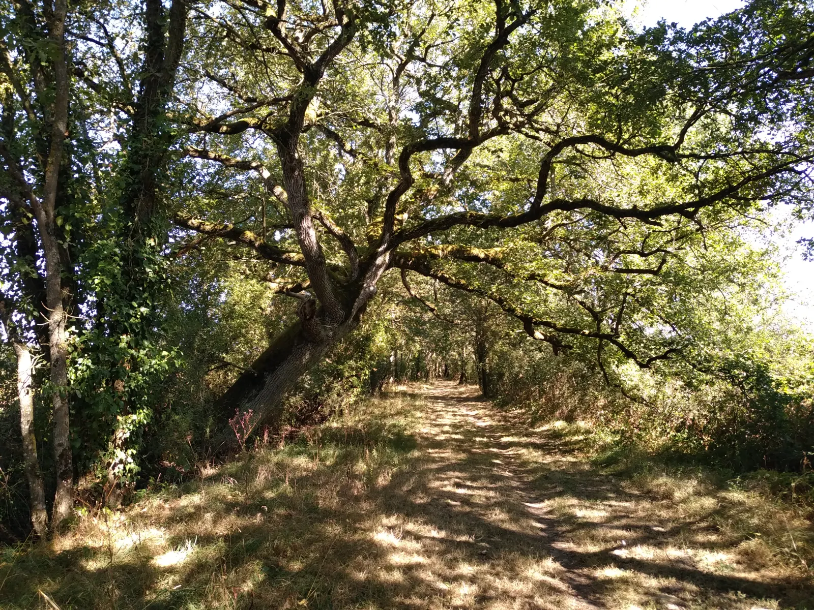
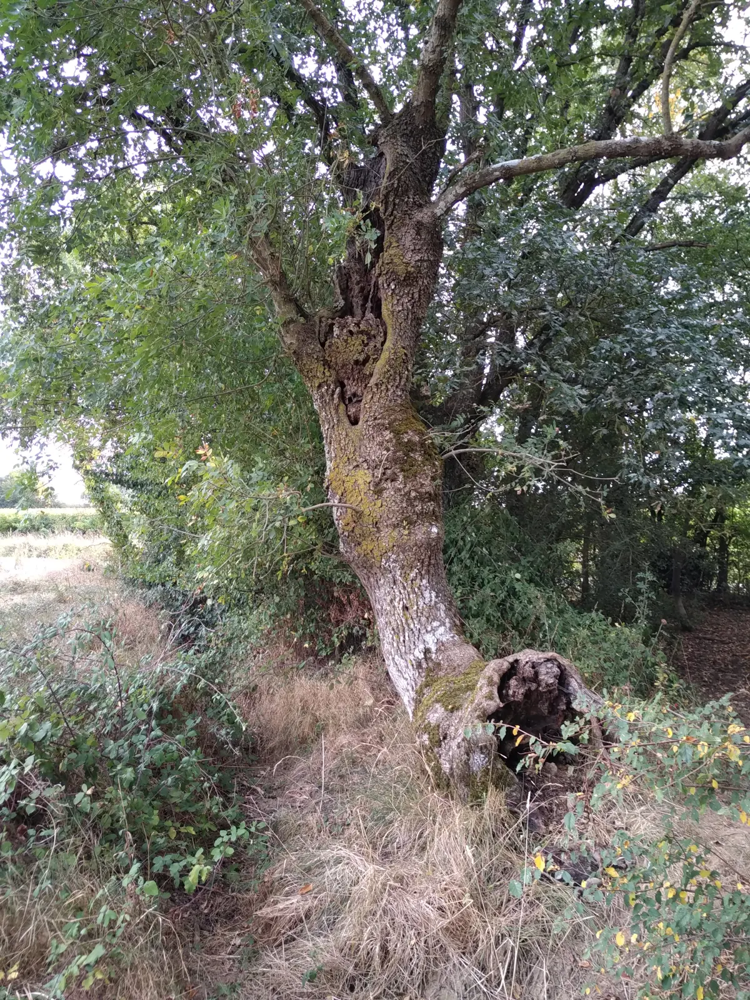
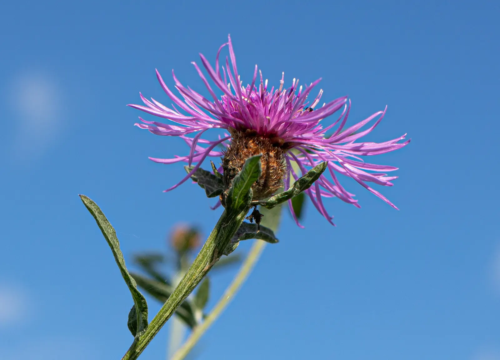

Les végétaux arrivent en boutique
Ils sont disponibles à partir de mi-novembre pour les mottes, et à partir de décembre pour les végétaux en racines nues.
24arbres
33arbustes
1liane
Une pépinière biologique qui veut supprimer les énergies fossiles et les intrants, avec la traction animale comme énergie principale. Des végétaux d’origine sauvage, robustes et nécessaires à la biodiversité et au climat. Le conseil de plantation est gratuit.

Fraxinus sp produit et vend des arbres, arbustes et herbacées d’origine locale, sous la marque Végétal Local.
Ils sont récoltés dans la région, à la main, sur des spécimens sauvages, pour le Bassin Parisien Sud et le Massif Armoricain. Des végétaux adaptés au climat, robustes et nécessaires à la biodiversité locale. La production repose sur la traçabilité, avec un cahier des charges strict sur les sites de récolte, les récoltes et la mise en production.


Merisiers (Prunus avium)

Les travaux agricoles de la ferme se font avec la traction équine, dans une démarche bas carbone. Fraxinus sp propose aussi des prestations de service en traction animale, pour limiter l’impact carbone des entreprises.
Face au réchauffement climatique et à la perte de biodiversité, la SARL Fraxinus sp propose plusieurs solutions, pour retrouver de la biodiversité partout.

Des végétaux d’origine sauvage, et le conseil de plantation gratuit.
Des prestations de service pour limiter l’impact carbone des entreprises.
Conseils, études et travaux pour tous, pour restaurer les milieux.
Pour accompagner les paysans dans leur transition en agroécologie.
« Travailler pour et par la nature, dans une gestion concertée et une vision intégrée, en favorisant la résilience des écosystèmes. »
Fraxinus est le nom latin des frênes. Fraxinus sp désigne un frêne dont on ne connaît pas l’espèce exacte. Dans nos régions, il en existe deux, le frêne à feuilles étroites et le frêne élevé, et la quasi totalité des frênes qui bordent la Loire sont des hybrides des deux : Fraxinus sp les représente tous.
Les frênes acceptent bien la taille en têtard, toutes les branches tous les 6 à 10 ans. Elle crée des arbres aux formes étranges, les trognes, colonisés ensuite par d’innombrables espèces. Pas d’inquiétude, l’arbre en souffre peu et pousse encore plus vite.
De nombreuses raisons de porter son nom.

La saison des plantations, la boutique, les visites : ce qu’il faut savoir en ce moment.

Ils sont disponibles à partir de mi-novembre pour les mottes, et à partir de décembre pour les végétaux en racines nues.
Merci de faire votre demande par mail.
Pour suivre la pépinière et la ferme entre deux visites.